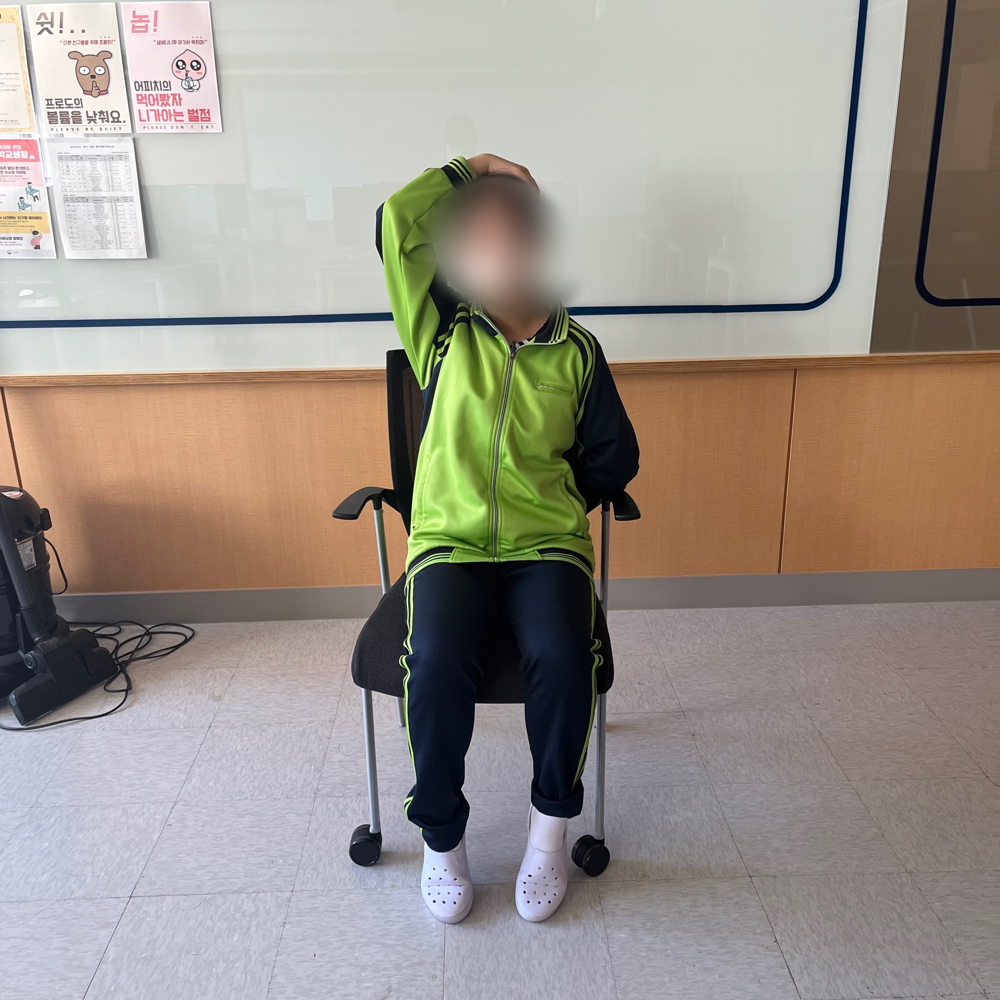

탈출! 거북목
신체 : 목
시간 : 6분
|  |
1. 3세트 | 20초1. 바른 자세로 정면을 바라본다. 2. 스트레칭이 필요한 반대쪽 팔로 두상 옆을 지지한다. 3. 어깨 부근으로 부드럽게 당기며 유지한다. |
2. 3세트 | 30초1. 바른 자세로 정면을 보고 한쪽 팔을 뒷짐진 자세를 유지한다. 2. 스트레칭이 필요한 반대쪽 팔로 정수리를 지지한다. 3. 고개를 30도 정도 각도를 유지한 체 가볍게 당긴다체 |
|
3. 3세트 | 20초1. 벽에 머리, 등, 엉덩이, 무릎, 발뒤꿈치를 붙여준다. 2. 양팔을 90도로 들어 팔꿈치와 손등을 벽에 붙인체 10초간 유지한다. 3. 위 자세에서 팔을 오르락 내리락 한다. |